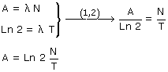
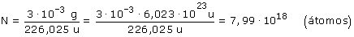
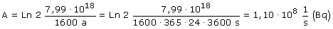
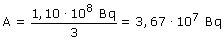

a)  Calculamos N (Núcleos de Ra-226 que hay en 3 mg de muestra):   Se producen 1,10·108 desintegraciones por segundo b) La actividad es proporcional a la cantidad de átomos existentes. Si la muestra se reduce a la tercera parte la actividad también lo hará:  |